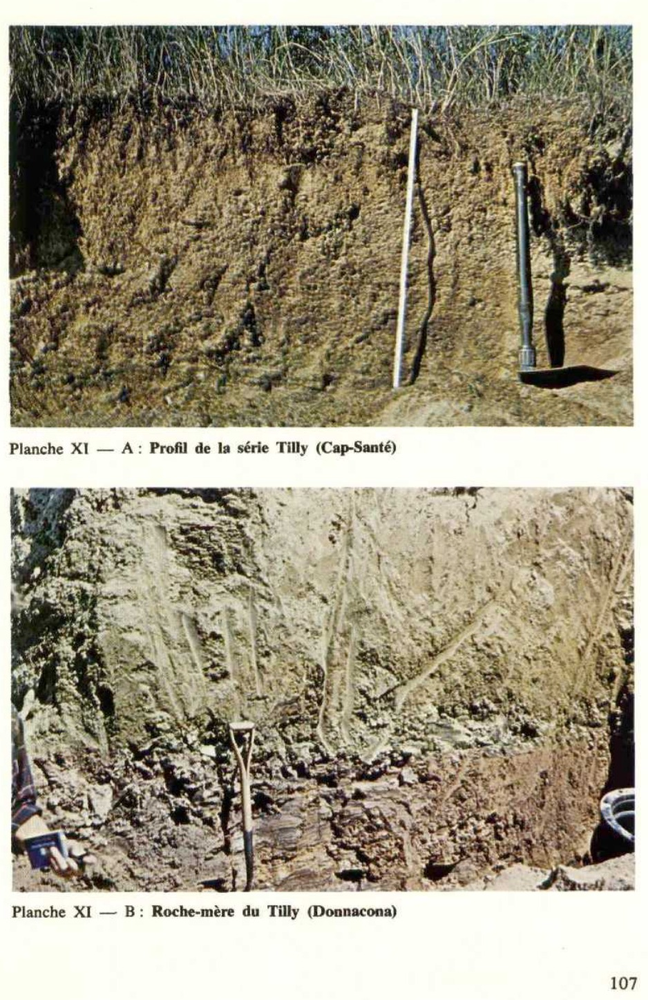

Identification & Caractéristiques Générales
La série Tilly comprend des sols minéraux développés principalement sur des matériaux résiduels et modifiés par des apports aquiques, issus de la désagrégation in situ et du remaniement de schistes argileux et limono-argileux d'Utica. Le profil pédologique repose sur un substratum rocheux constitué de ces mêmes schistes argileux, dont la structure laminée se transmet souvent aux assises sus-jacentes. Ce substratum est généralement rencontré à des profondeurs variant de 3 à 8 pieds, marquant une transition graduelle et continue entre le roc et le solum. La topographie est caractérisée par des positions de plaine ou de faibles pentes favorisant le modelé régional.
Le solum présente une texture limono-argileuse, caractérisée par une consistance plus légère que celle des argiles lourdes avoisinantes, avec une coloration à l'état sec variant du brun pâle au jaune. Le drainage naturel est bon à modérément bon, parfois bonifié par la fissuration des couches de schistes partiellement décomposées situées entre 1 et 3 pieds de profondeur. Le profil montre occasionnellement des mouchetures de rouille à sa base, témoignant d'une battement temporaire de la nappe phréatique. La réaction chimique des horizons est fortement acide, avec des valeurs de pH oscillant entre 4,8 et 5,4 en l'absence d'amendements calcaires. Le substratum profond peut toutefois renfermer des lits plus riches en carbonates, bien qu'en dehors de la zone d'enracinement effectif de la plupart des cultures.
En raison de ses propriétés physiques favorables et de son bon drainage, la série Tilly présente une aptitude élevée pour une grande variété de productions agricoles, incluant les grandes cultures, les cultures fourragères, ainsi que diverses productions horticoles et fruitières telles que la pomme de terre, les petits fruits (fraises, framboises) et la pomme. Les limitations majeures résident dans l'acidité prononcée du sol et la profondeur parfois restreinte du substratum schisteux, qui peut limiter le développement racinaire en profondeur ou contraindre la arboriculture fruitière. La régie agronomique requiert des apports réguliers d'amendements calciques et d'engrais minéraux ou organiques pour optimiser les rendements en céréales et en foin, à l'exception toutefois des parcelles dédiées à la culture de la pomme de terre où le maintien d'un pH bas est requis.
Classification Taxonomique & Environnement Pédologique
| Ordre Pédologique | Podzolique |
|---|---|
| Grand Groupe (SCSS) | Podzol humo-ferrique |
| Sous-Groupe Taxonomique | Podzol humo-ferrique gleyifié |
| Famille Pédologique | Limoneuse-fine, mixte argileux, acide |
| Mode de Dépôt Parental | Fluviatile sur résiduel |
| Classe de Drainage Naturel | Modérément bien drainé |
| Régime Thermique & Humidité | Frais / Humide |
Description Morphologique du Profil Type
Séquences génétiques des horizons pédologiques caractérisant le profil type représentatif de la série Tilly :
Profil représentatif — Comté de Lévis
✓ Source : Comté de Lévis — Page 64Couleur Munsell : 7.5YR 6/4
Structure & Consistance : Granulaire et consistance friable
Description morphologique : Loam limono-argileux, brun clair (7.5YR 6/4). Structure granulaire et consistance friable; pH: 4.9.
Couleur Munsell : 10YR 7/3
Structure & Consistance : Polyédrique à granulaire
Description morphologique : Loam limono-argileux brun très pâle (10YR 7/3). Granulaire et friable; pH: 5.0.
Couleur Munsell : 10YR 4/3
Structure & Consistance : Polyédrique assez bien développée
Description morphologique : Loam limoneux brun (10YR 4/3). Structure polyédrique assez bien développée; pH: 4.9.
Couleur Munsell : 10YR 4/2
Structure & Consistance : Polyédrique à granulaire
Description morphologique : Loam limoneux (parfois présence de beaucoup de schistes d'Utica) brun foncé (10YR 4/2). Mouchetures de rouille; pH: 5.1.
Couleur Munsell : 10YR 4/4, 10YR 5/6
Structure & Consistance : Polyédrique à granulaire
Description morphologique : Roche-mère d'épaisseur variable. Loam limono-argileux variant de brun jaune foncé (10YR 4/4) à brun jaunâtre (10YR 5/6). Friable; pH: 5.3.
Couleur Munsell : Non précisée
Structure & Consistance : Polyédrique à granulaire
Description morphologique : Substratum: roc constitué de schistes d'Utica.
Profil représentatif — Comté de Lotbinière
✓ Source : Comté de Lotbinière — Page 62Couleur Munsell : Non précisée
Structure & Consistance : Polyédrique à granulaire
Description morphologique : Horizon d'humus brut (mor), non minéralisé; sans structure; friable; pH: 4.9.
Couleur Munsell : 10YR 4/2
Structure & Consistance : Granulaire et polyédrique bien développée
Description morphologique : Horizon d'humus assez bien minéralisé. Argile brun gris foncé (10YR 4/2), très friable, structure granulaire et polyédrique bien développée; pH: 4.9.
Couleur Munsell : 10YR 7/3
Structure & Consistance : Polyédrique à granulaire
Description morphologique : Horizon d'appauvrissement maximum; discontinu. Argile brun très pâle (10YR 7/3); pH: 4.6-4.7.
Couleur Munsell : 10YR 5/4
Structure & Consistance : Polyédrique bien développée
Description morphologique : Argile friable, brun jaune à brune (10YR 5/4-4/3). Structure polyédrique bien développée; pH: 4.9.
Couleur Munsell : 10YR 6/3
Structure & Consistance : Polyédrique modérément développée
Description morphologique : Argile friable, brun pâle (10YR 6/3). Structure polyédrique modérément développée; pH: 4.9. N.B.: présence de racines de plantes.
Couleur Munsell : Non précisée
Structure & Consistance : Polyédrique à granulaire
Description morphologique : Horizon absent, mais généralement visible. Mouchetures de rouille plus ou moins abondantes (glei).
Couleur Munsell : 10YR 6/4
Structure & Consistance : Polyédrique à granulaire
Description morphologique : Roche-mère d'épaisseur variable, suivant la décomposition des schistes argileux d'Utica. Argile brun jaune pâle (10YR 6/4), compacte, mais friable; abondance de fragments de schistes facilement broyables; pH: 5.0.
Couleur Munsell : Non précisée
Structure & Consistance : Polyédrique à granulaire
Description morphologique : Substratum: roc constitué de schistes argileux d'Utica, formation de Lotbinière.
Profil cultivé (agricole) — Comté de Portneuf
✓ Source : Comté de Portneuf — Page 79Couleur Munsell : 10YR 3/3, 10YR 6/2
Structure & Consistance : Polyédrique à granulaire
Description morphologique : Loam argileux brun foncé (10YR 3/3 h), gris-brun clair (10YR 6/2 s) ; granulaire, grossière, modérée ; très friable ; racines peu abondantes, moyennes, non-orientées, exo-agrégats ; racines très abondantes, fines à microscopiques, non-orientées, endo-agrégats ; quelques fragments de schistes ; limite distincte, régulière ; pH : 6.1.
Couleur Munsell : 7.5YR 6/4, 10YR 7/2
Structure & Consistance : Polyédrique à granulaire
Description morphologique : Loam limono-argileux brun clair (7.5YR 6/4 h), gris clair à brun très pâle (10YR 7/2 à 7/3 s) ; granulaire, grossière, modérée ; très friable ; racines très abondantes, fines à microscopiques, verticales, endo-agrégats ; quelques fragments de schistes ; limite abrupte, interrompue ; pH : 4.6.
Couleur Munsell : 5YR 5/6, 10YR 6/4
Structure & Consistance : Polyédrique à granulaire
Description morphologique : Loam argileux rouge-jaune (5YR 5/6 h), brun-jaune clair (10YR 6/4 s) ; granulaire, grossière, modérée ; très friable ; racines abondantes, fines à microscopiques, verticales, endo-agrégats ; quelques fragments de schistes ; limite distincte, ondulée ; pH : 4.8.
Couleur Munsell : 7.5YR 5/6, 10YR 7/4
Structure & Consistance : Polyédrique à granulaire
Description morphologique : Loam limoneux brun vif (7.5YR 5/6 h), brun très pâle (10YR 7/4 s) ; polyédrique sub-angulaire, moyenne, modérée ; très friable ; racines abondantes, microscopiques, verticales, exo-agrégats ; quelques fragments de schistes ; limite distincte, ondulée ; pH : 4.8.
Couleur Munsell : 10YR 4/4, 10YR 6/3, 7.5YR 6/6
Structure & Consistance : Polyédrique à granulaire
Description morphologique : Loam limoneux brun-jaune foncé (10YR 4/4 h), brun pâle (10YR 6/3 s) ; taches jaune-rouge (7.5YR 6/6 h) nombreuses, petites, distinctes ; polyédrique, sub-angulaire, moyenne, modérée ; très friable ; racines peu abondantes, microscopiques, verticales, exo-agrégats ; quelques fragments de schistes ; limite distincte, régulière ; pH : 4.8.
Profil forestier / boisé — Comté de Portneuf
✓ Source : Comté de Portneuf — Page 80Couleur Munsell : Non précisée
Structure & Consistance : Polyédrique à granulaire
Description morphologique : Débris de plantes surtout.
Couleur Munsell : 10YR 2/1, 10YR 3/1
Structure & Consistance : Polyédrique à granulaire
Description morphologique : Mor feutré noir (10YR 2/1) avec abondance de mycelium gris très foncé (10YR 3/1 h).
Couleur Munsell : Non précisée
Structure & Consistance : Polyédrique à granulaire
Description morphologique : Mor plus décomposé; zone radiculaire intense.
Couleur Munsell : 10YR 5/2, 7.5YR 8/2
Structure & Consistance : Sub-angulaire et angulaire fine à grossière
Description morphologique : Argile limoneuse brun-gris (10YR 5/2 h) et blanc rose (7.5YR 8/2 h). Structure sub-angulaire et angulaire fine à grossière, moyennement à fortement développée. Racines peu abondantes. La consistance est friable en place, se brisant en pèdes fermes lorsqu'enlevés.
Couleur Munsell : 5YR 4/4, 10YR 6/3, 5YR 3/4
Structure & Consistance : Sub-angulaire et angulaire moyenne à grossière fortement développés
Description morphologique : Argile limoneuse brun-rouge (5YR 4/4 h) et brun pâle (10YR 6/3 s) avec enduits brun-rouge foncé (5YR 3/4 h). La consistance est la même que celle de l'Ae 1 , excepté que les pèdes sont plus grossiers. Structure sub-angulaire et angulaire moyenne à grossière fortement développés. Limite abrupte et unie.
Couleur Munsell : 7.5YR 4/4, 2.5YR 3/2, 5YR 3/2
Structure & Consistance : Sub-angulaire grossière moyennement développée
Description morphologique : Loam limono-argileux brun foncé (7.5YR 4/4 h) à l'intérieur des pèdes et cutanes brun-rouge foncé (5YR 3/2, à 3/4 h) et rouge sombre (2.5YR 3/2 h). Structure sub-angulaire grossière moyennement développée. Consistance ferme en place. Les pèdes s'enlèvent facilement. Racines abondantes, surtout dans les crevasses.
Couleur Munsell : 10YR 5/3 (matrice), 10YR 7/3 (marbrures)
Structure & Consistance : Prismatique moyenne et moyennement développée
Description morphologique : Loam limono-argileux brun (10YR 5/3 h) et brun très pâle (10YR 7/3 s) avec enduits brun foncé (7.5YR 4/4 h). Structure prismatique moyenne et moyennement développée. Consistance semblable à celle du Bfh. Mouchetures faibles et fines peu abondantes. Racines abondantes.
Couleur Munsell : 2.5Y 5/2 (matrice), 10YR 5/6 (marbrures)
Structure & Consistance : Polyédrique à granulaire
Description morphologique : Loam limono-argileux brun-gris (2.5Y 5/2 h) et gris clair à gris-brun clair (2.5Y 7/2, 6/2 s) avec mouchetures brun-jaune (10YR 5/6 h), jaune-brun (10YR 6/8 s) fréquentes, moyennes,
Profil naturel (vierge) — Comté de Portneuf — Phase graveleuse
✓ Source : Comté de Portneuf — Page 82Couleur Munsell : 10YR 2/0
Structure & Consistance : Polyédrique à granulaire
Description morphologique : Débris de matière organique, noir (10YR 2/0).
Couleur Munsell : 10YR 5/6
Structure & Consistance : Polyédrique à granulaire
Description morphologique : Argile limoneuse brun-jaune (10YR 5/6) ; polyédrique ; taches assez nombreuses ; paillettes schisteuses.
Couleur Munsell : 2.5Y 6/2
Structure & Consistance : Polyédrique à granulaire
Description morphologique : Argile gris-brun clair à brun-gris (2.5Y 6/2 à 5/2) ; nombreuses taches ; massive ; compacte.
Profil forestier / boisé — Comté de Portneuf
✓ Source : Comté de Portneuf — Page 83Couleur Munsell : Non précisée
Structure & Consistance : Polyédrique à granulaire
Description morphologique : Couche de brindilles et de feuilles en partie décomposées, avec mycélium.
Couleur Munsell : Non précisée
Structure & Consistance : Polyédrique à granulaire
Description morphologique : Granules résineux et noirs plus abondants que les fragments de plantes. Grande activité de mycélium, insectes et racines.
Couleur Munsell : 10YR 3/2, 10YR 3/1
Structure & Consistance : Fine grenue moyennement développée et sub-anguleuse moyenne
Description morphologique : Épaisseur 0 à 8 cm. Loam argileux brun-gris très foncé (10YR 3/2 h) et gris très foncé (10YR 3/1 s). Structure fine grenue moyennement développée et sub-anguleuse moyenne, moyennement développée. Consistance très friable. Apparence de mull. Laisse diffuse et discontinue.
Couleur Munsell : 10YR 8/2 (matrice), 10YR 4/2 (marbrures)
Structure & Consistance : Sub-anguleuse moyenne à grossière
Description morphologique : Épaisseur 2 à 8 cm. Argile brune à brun-gris (10YR 5/3, 5/2 h) et blanc (10YR 8/2 s) avec enduits brun-gris foncé (10YR 4/2 h) et brun très pâle (10YR 8/4 s); mouchetures distinctes jaune-brun (10YR 6/8 s). Structure sub-anguleuse moyenne à grossière, moyennement développée. Consistance friable. Les pèdes sont durs lorsque secs, friables à l'état humide et plastique à l'état trempé. Nombreuses fissures entre les pèdes.
Couleur Munsell : 10YR 6/3 (matrice), 10YR 6/8 (marbrures)
Structure & Consistance : Lamellaire grossière au sein des pèdes sub-angulaires grossiers bien développés
Description morphologique : Épaisseur 5 à 8 cm. Argile limoneuse brun pâle (10YR 6/3 h), mouchetures moyennes, distinctes et modérément développées de couleur jaune-brun à brun jaune (10YR 6/8, 5/8 h). Structure lamellaire grossière au sein des pèdes sub-angulaires grossiers bien développés. Enduits plus pâles et mouchetures plus abondantes à l'intérieur des pèdes.
Couleur Munsell : 5Y 6/1 (matrice), 7.5YR 7/0 (marbrures)
Structure & Consistance : Prismatique très grossière et bien développée
Description morphologique : Épaisseur de 15 à 20 cm. Loam limono-argileux gris (5Y 6/1 h), gris clair (7.5YR 7/0 s). Mouchetures nombreuses, grossières, distinctes, brun vif (7.5YR 5/8 h) et jaunes (10YR 7/6 s). Enduits continus gris (5Y 5/1 h) et gris pâle (2.5Y 7/2 s). Structure prismatique très grossière et bien développée. Consistance plastique, dure à l'état sec.
Couleur Munsell : 5Y 7/1 (matrice), 10YR 6/2 (marbrures)
Structure & Consistance : Massive
Description morphologique : Épaisseur de 13 à 20 cm. Argile limoneuse gris clair (5Y 7/1 h) et gris-brun clair (10YR 6/2 s). Mouchetures nombreuses, moyennes, saillantes, rouge- jaune (5YR 5/6, 5/8 h) et brun vif (7.5YR 5/8 s). Structure massive. Limite abrupte, qui marque le début d'une stratification très évidente des matériaux autochtones.
Couleur Munsell : 10YR 4/3 (matrice), 10YR 5/8 (marbrures)
Structure & Consistance : Lamellaire grossière
Description morphologique : Épaisseur de 8 à 13 cm. Fragments de schistes gris foncé et gris clair (10YR 4/1 h, 2.5Y 7/2 h) et brun foncé (10YR 4/3 s). Nombreux enduits. Mouchetures moyennes, moyennement abondantes et distinctes, de couleur brun-jaune (10YR 5/8 h). Consistance collante à cause des enduits. Structure lamellaire grossière, composée de lits schisteux.
Couleur Munsell : 10YR 3/2, 2.5Y 5/2
Structure & Consistance : Polyédrique à granulaire
Description morphologique : Schiste altéré brun-gris très foncé (10YR 3/2 h) et brun-gris (2.5Y 5/2 s). Nombreux enduits gris à gris foncé (N5, h).
Profil forestier / boisé — Étude pédologique des îles d'Orl
✓ Source : Étude pédologique des îles d'Orl — Page 43Couleur Munsell : Non précisée
Structure & Consistance : Polyédrique à granulaire
Description morphologique : Litière composée de brindilles et de feuilles peu décomposées.
Couleur Munsell : 5YR 2/1
Structure & Consistance : Granulaire
Description morphologique : Humus noir (5 YR 2/1 h); structure granulaire, fine, modérée; racines abondantes, fines et moyennes; épaisseur de 2 à 3 cm; transition abrupte, régulière; très fortement acide.
Couleur Munsell : 10YR 5/3
Structure & Consistance : Granulaire fine
Description morphologique : Loam limono-argileux brun (10 YR 5/3 h); structure granulaire fine, faible; racines fréquentes, fines; friable; perméable; épaisseur de 3 à 4 cm; limite nette, régulière; fortement acide.
Couleur Munsell : 10YR 5/6
Structure & Consistance : Polyédrique subangulaire
Description morphologique : Loam limono-argileux brun jaune (10 YR 5/6 h); structure polyédrique subangulaire, fine, faible; racines rares et fines; friable; perméable; épaisseur de 12 à 15 cm; limite graduelle, ondulée; fortement acide.
Profil cultivé (agricole) — Comté de Québec
✓ Source : Comté de Québec — Page 48Couleur Munsell : 10YR 3/3, 10YR 6/2
Structure & Consistance : Polyédrique à granulaire
Description morphologique : Loam argileux brun foncé (10YR 3/3 h), gris-brun clair (10YR 6/2 s); granulaire, grossière, modérée; très friable racines peu abondantes, moyennes, non-orientées, exo-agrégats; racines très abondantes, fines à microscopiques, non-orientées, endo-agrégats; quelques fragments de schistes; limite distincte, régulière; épaisseur de 14 à 20 cm; pH: 6.1.
Couleur Munsell : 7.5YR 6/4, 10YR 7/2
Structure & Consistance : Polyédrique à granulaire
Description morphologique : Loam limono-argileux brun clair (7.5YR 6/4 h), gris clair à brun très pâle (10YR 7/2 à 7/3 s); granulaire, grossière, modérée; très friable: racines très abondantes, fines à microscopiques, verticales, endo-agrégats; quelques fragments de schistes; limite abrupte, interrompue; épaisseur de 0 à 5 cm; pH: 4.6.
Couleur Munsell : 5YR 5/6, 10YR 6/4
Structure & Consistance : Polyédrique à granulaire
Description morphologique : Loam argileux rouge-jaune (5YR 5/6 h), brun-jaune clair(10YR 6/4 s); granulaire, grossière, modérée; très friable; racines abondantes, fines à microscopiques, verticales, endo-agrégats; quelques fragments de schistes; limite distincte, ondulée; épaisseur de 9 à 14 cm; pH: 4.8.
Couleur Munsell : 7.5YR 5/6, 10YR 7/4
Structure & Consistance : Polyédrique à granulaire
Description morphologique : Loam limoneux brun vif (7.5YR 5/6 h), brun très pâle (10YR 7/4 s); polyédrique subangulaire, moyenne, modérée; très friable; racines abondantes, microscopiques, verticales, exo-agrégats; quelques fragments de schistes; limite distincte, ondulée; épaisseur de 5 à 10 cm; pH: 4.8
Couleur Munsell : 10YR 4/4, 10YR 6/3, 7.5YR 6/6
Structure & Consistance : Polyédrique à granulaire
Description morphologique : Loam limoneux brun-jaune foncé (10YR 4/4 h), brun pâle(10YR 6/3 s); taches jaune-rouge (7.5YR 6/6 h), nombreuses, petites, distinctes; polyédrique, subangulaire, moyenne, modérée; très friable; racines peu abondantes, microscopiques, verticales, exo-agrégats; quelques fragments de schistes; limite distincte, régulière; épaisseur de 22 à 30 cm; pH: 4.8.
Couleur Munsell : 10YR 3/3, 7.5YR 6/6, 7.5YR 4/4
Structure & Consistance : Polyédrique à granulaire
Description morphologique : Loam brun foncé à brun-jaune foncé (7.5YR 4/4 à 10YR4/4 h), brun (10YR 3/3 s); taches jaune-rouge (7.5YR 6/6 h), nombreuses, petites, distinctes; lamellaire, moyenne, modérée; très friable; racines très peu abondantes, microscopiques, verticales, exo-agrégats; fragments de schistes; limite distincte, ondulée; épaisseur de 12 à 15 cm; pH: 4.8.
Couleur Munsell : 10YR 5/2, 10YR 5/3, 7.5YR 6/6
Structure & Consistance : Polyédrique à granulaire
Description morphologique : Loam brun-gris (10YR 5/2 h), brun (10YR 5/3 s); taches jaune-rouge (7.5YR 6/6 h), nombreuses, petites, distinctes; lamellaire, moyenne, modérée; très friable; fragments de schistes; pH: 4.6.
Profils Photographiques & Planches de Terrain
Documents iconographiques, figures pédologiques et coupes de terrain documentées dans les mémoires d'inventaire pour de la série Tilly :

Propriétés Physico-Chimiques & Analyses de Laboratoire
| Horizon | Prof. (pces/cm) | Sable % | Limon % | Argile % | pH | C % | N % | Ca éch. | Mg éch. | K éch. | H+ éch. | Bases tot. | C.E.C. (meq/100g) | Saturation % | ||||||||||||
|---|---|---|---|---|---|---|---|---|---|---|---|---|---|---|---|---|---|---|---|---|---|---|---|---|---|---|
| Ap | 0-14 | 6.0 | 6.0 | 9.0 | 5.0 | 26.0 | 45.0 | 29.0 | 6.1 | 5.5 | 3.62 | 0.32 | 1.61 | 0.17 | 0.53 | 0.20 | 0.60 | 0.36 | 15.00 | 1.27 | 1.12 | 0.19 | 4.0 | 21.58 | 81 | 63 |
| Ae | 14-18 | 4.0 | 4.0 | 5.0 | 2.0 | 15.0 | 49.0 | 36.0 | 4.6 | 3.8 | 1.14 | 0.18 | 1.93 | 0.25 | 0.52 | 0.32 | 0.69 | 0.61 | 3.95 | 0.84 | 0.66 | 0.11 | 16.0 | 21.56 | 26 | 20 |
| Bf | 18-28 | 3.0 | 6.0 | 11.0 | 8.0 | 28.0 | 40.0 | 32.0 | 4.8 | 4.1 | 1.38 | 0.16 | 2.42 | 0.54 | 0.98 | 0.77 | 1.09 | 0.85 | 1.25 | 0.39 | 0.86 | 0.07 | 12.0 | 14.57 | 18 | 28 |
| Bm | 28-37 | 4.0 | 4.0 | 7.0 | 2.0 | 17.0 | 58.0 | 25.0 | 4.8 | 4.1 | 0.70 | 0.14 | 1.99 | 0.40 | 0.64 | 0.50 | 0.66 | 0.59 | 1.05 | 0.37 | 0.73 | 0.06 | 10.0 | 12.21 | 18 | 25 |
| Bmgj | 37-60 | 6.0 | 4.0 | 7.0 | 3.0 | 20.0 | 58.0 | 22.0 | 4.8 | 4.0 | 0.40 | 0.14 | 1.73 | 0.21 | 0.43 | 0.25 | 0.31 | 0.33 | 1.50 | 0.42 | 0.56 | 0.05 | 10.0 | 12.53 | 20 | 18 |
| Cg1 | 60-75 | 6.0 | 10.0 | 12.0 | 3.0 | 31.0 | 45.0 | 24.0 | 4.7 | 3.9 | 0.31 | 0.12 | 1.56 | 0.18 | 0.40 | 0.20 | 0.19 | 0.24 | 1.05 | 0.37 | 6.39 | 0.04 | 8.0 | 15.85 | 50 | 35 |
| Cg2 | à 75 cm | 10.0 | 17.0 | 14.0 | 3.0 | 44.0 | 36.0 | 20.0 | 4.7 | 3.9 | 0.27 | 0.10 | 1.19 | 0.15 | 0.42 | 0.15 | 0.10 | 0.16 | 0.85 | 0.33 | 0.28 | 0.04 | 7.0 | 8.50 | 18 | 43 |
Particularités Régionales, Phases & Variantes Pédologiques
Déclinaisons régionales, faciès texturaux, phases d'érosion ou de pierrosité et variantes cartographiées par étude pour de la série Tilly :
| Étude Régionale | Symbole | Appellation / Phase / Variante | Différenciation avec la série type (Analyse pédologique) |
|---|---|---|---|
| Comté de Lévis | Ty |
Tilly loam limoneux argileux | Modalité modale de référence (type de base de la série). |
| Comté de Lotbinière | Ty |
Tilly argile | Faciès argileux plus lourd et compact que le loam limoneux de référence. |
| Comté de Portneuf | Ty |
Tilly loam argileux | Faciès argileux plus lourd et compact que le loam limoneux de référence. |
Ty-g |
Tilly loam argileux phase graveleuse | Faciès argileux plus lourd et compact que le loam limoneux de référence. | |
| Comté de Québec | Ty |
Tilly loam argileux | Faciès argileux plus lourd et compact que le loam limoneux de référence. |
Ty-d |
Tilly loam argileux avec discordance dans le matériau ou dans le profil | Faciès argileux plus lourd et compact que le loam limoneux de référence. | |
Ty-r |
Tilly loam argileux remanié | Faciès argileux plus lourd et compact que le loam limoneux de référence. | |
| Îles d'Orléans, aux Coudres et aux Grues | TlyC |
Tilly loam argileux 2 à 5% de pente | Faciès argileux plus lourd et compact que le loam limoneux de référence. |
| Étude pédologique des îles d'Orl | TLY |
Série Tilly (Tly) | Conforme à la série type de référence (caractéristiques texturales et drainage identiques). |
Distribution Pédo-Paysagère & Représentativité Cartographique (Couverture PPS 2026)
- Joly loam limoneux argileux (JOY) — co-occurrente dans 96 polygone(s)
- Platon argile (PLO) — co-occurrente dans 18 polygone(s)
- Saint-Antoine sable grossier loameux (SNO) — co-occurrente dans 8 polygone(s)
Aptitudes Agronomiques, Hydropédologie & Conservation des Sols
Indicateurs Hydropédologiques & Vulnérabilité à l'Érosion (BDHP 2026)
Interprétation BDHP : Potentiel de ruissellement très élevé. Taux d'infiltration très lent, sols très argileux, couches compactes ou nappe temporairement affleurante.
Classement selon l'Inventaire des Terres du Canada (ITC / CLI) : Classe 1.
- Potentiel agricole : Terroir adapté aux cultures régionales selon la texture dominante et la régie de drainage.
- Contraintes majeures : Modérément bien drainé. Risque d'engorgement temporaire ou d'excès d'eau printanier.
- Gestion & Aménagement : Drainage souterrain ou superficiel préconisé sur les terres planes. Chaulage et apport organique régulier selon les bilans agronomiques.
- Cultures adaptées : Grandes cultures (maïs, soya, céréales), prairies fourragères et cultures maraîchères selon le contexte géomorphologique.